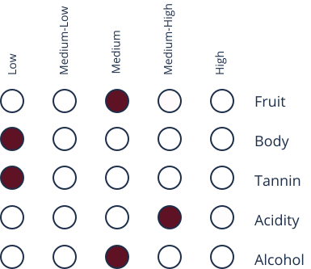
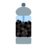

About
Bardolino is exclusively produced in the quaint region of Bardolino around Lake Garda. Although it is composed of the same grapes as Valpolicella wines, the ratios differ as well as the climate in which the grapes grow. The soil near Lake Garda contains clay and limestone whereas the soil in the Valpolicella region is composed of volcanic soil. These different soils along with the lake breeze create a noticeably different grape flavour profile. There are a few versions of Bardolino; Bardolino, Bardolino Superiore DOCG and Bardolino Chiaretto. Bardolino Chiaretto is a unique sparkling rosé.
Taste Profile
Bardolino
"bhar-doe-lee-now"
Dominant Flavors
Marasca Cherry
Strawberry
Raspberry
Herbs- 
Black Pepper
Grapes
- Corvina:
contain cherry, spice, and green almond nodes - Rondinella
contain floral aromas
Pairings
- Cheese:
Monte Veronese, Gorgonzola, and Roquefort - Meat:
veal, pork, chicken, and prosciutto - Other:
Antipasti, baccala with polenta, pasta with cream or tomato sauce
Serving

14℃- 15℃

Burgundy Glass
Regions
Veneto